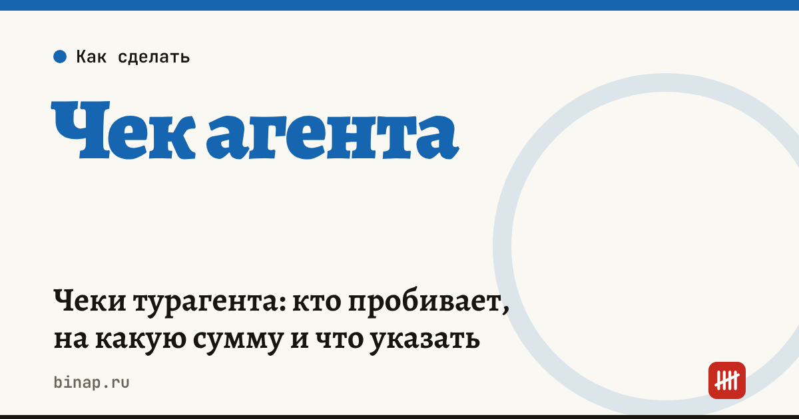

Чеки турагента: кто пробивает, на какую сумму и что указать

Если турист платит за тур агентству, агентство пробивает чек на всю полученную сумму — не только на своё вознаграждение. В чеке указывают признак агента и данные туроператора, за которого вы принимаете деньги. При предоплате и последующей доплате чеки пробивают на каждый платёж с правильным признаком расчёта. Детали настроек уточните у поставщика кассы и в разъяснениях ФНС.
Коротко
- Чек — на всю сумму, полученную от туриста, а не только на вознаграждение агента.
- В чеке — признак агента и сведения о поставщике: наименование и ИНН туроператора.
- Предоплата и доплата — отдельные чеки с признаками «предоплата» и «полный расчёт».
- Возврат денег туристу — чек возврата прихода.
- Если турист платит туроператору напрямую по его ссылке, чек пробивает туроператор, а не агентство.
Сроки, изменения и разборы для ИП и самозанятых — каждое утро в Telegram и MAX. Подпишитесь, чтобы не пропустить.
Какие чеки пробивать
| Ситуация | Какой чек | На какую сумму |
|---|---|---|
| Турист вносит предоплату | приход, «предоплата» | сумма предоплаты |
| Турист доплачивает | приход, «полный расчёт» с зачётом предоплаты | доплата |
| Турист оплачивает сразу всё | приход, «полный расчёт» или «предоплата 100%» — по дате оказания услуги | вся сумма |
| Возврат денег | возврат прихода | возвращаемая сумма |
| Ваш сервисный сбор | отдельная позиция без признака агента | сумма сбора |
Сервисный сбор агентства — это его собственная услуга, поэтому в чеке он идёт отдельной позицией, без признака агента.
Почему это важно для налогов
Чек на всю сумму не значит, что вся сумма — ваш доход. По агентскому договору доход агентства на УСН — вознаграждение и собственные сборы. Но налоговая сверяет выручку по кассе с отчётностью, и вы должны уметь показать, какая часть — деньги туроператора: доход турагента на УСН.
Пример (расчёт редакции). Тур — 200 000 ₽, вознаграждение — 10%, сервисный сбор — 2 000 ₽. По кассе пройдёт 202 000 ₽, доход агентства — 22 000 ₽, остальное — деньги туроператора по отчёту агента.
Онлайн-касса с поддержкой агентских чеков: ссылка
Что проверить в кассе
- [ ] Касса и программа умеют пробивать чек с признаком агента.
- [ ] В справочнике есть туроператоры с ИНН.
- [ ] Настроены признаки расчёта: предоплата, полный расчёт, возврат.
- [ ] Сервисный сбор заведён отдельной позицией.
- [ ] Кассир знает, как пробить чек коррекции при ошибке — по каждому расчёту отдельно.
Что проверяют на рейдах по кассам — рейды ФНС. Эквайринг со всей суммы тура съедает долю дохода — посчитайте в калькуляторе дохода турагентства. Все шаги — в разделе «Турагентствам».
Частые вопросы
Почему чек на всю сумму, если мой доход — только вознаграждение? Чек фиксирует расчёт с покупателем: турист заплатил вам всю сумму. Доход для налога определяется договором, а не чеком.
Нужен ли чек, если турист платит туроператору напрямую? Агентству — нет, чек пробивает туроператор. Агентство пробивает чек только на свои сборы, если берёт их.
Что делать, если чек пробит с ошибкой? Сформируйте чек коррекции — отдельно по каждому расчёту, а не одним на несколько.